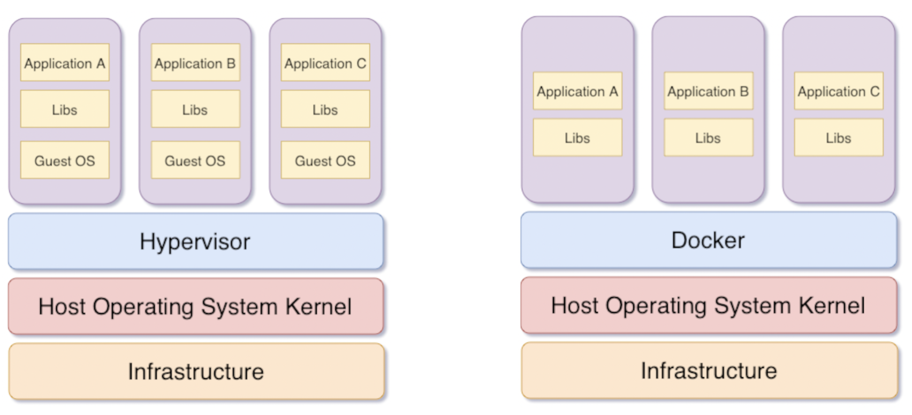
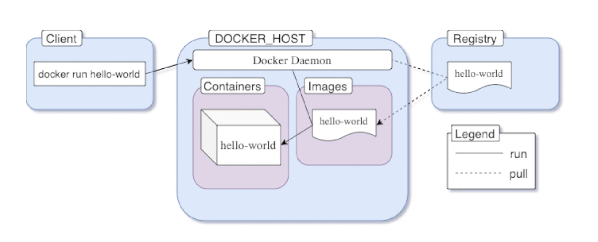
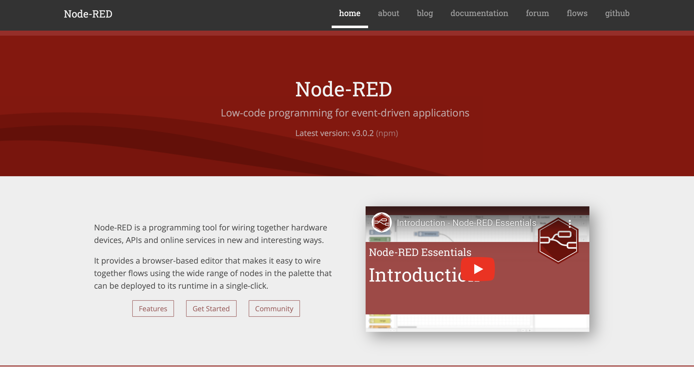
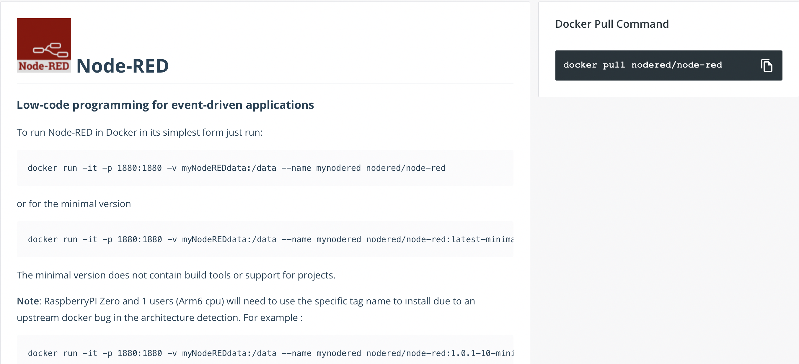
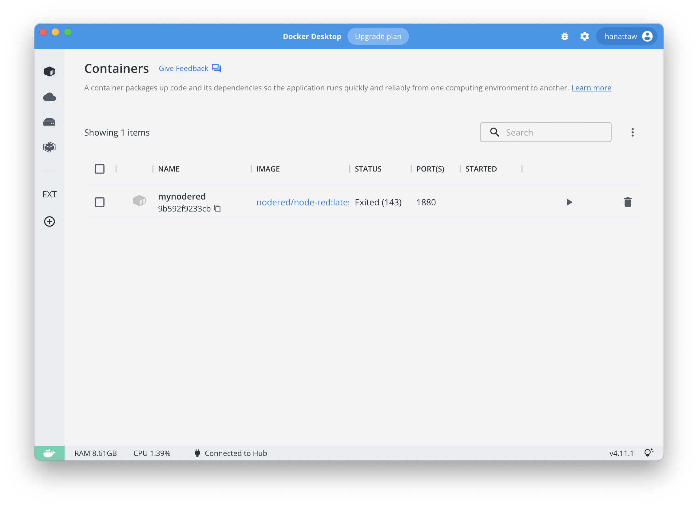
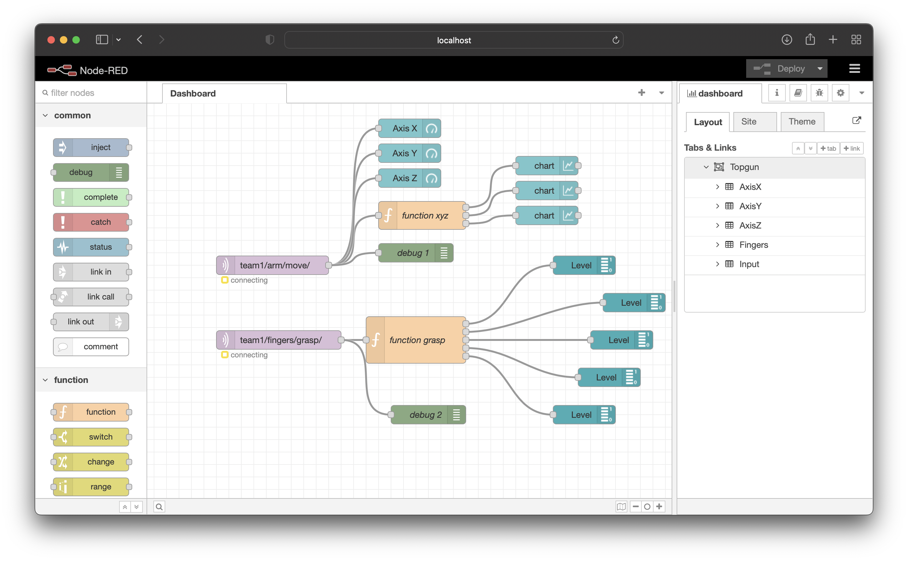
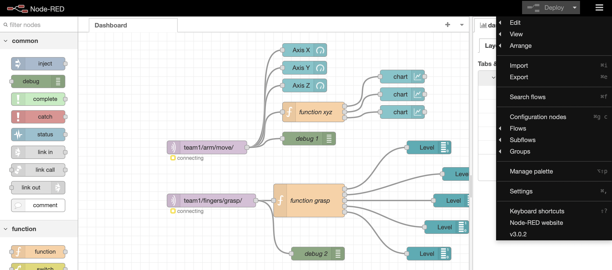
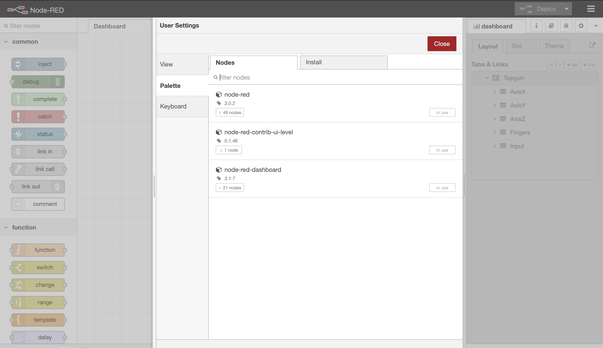
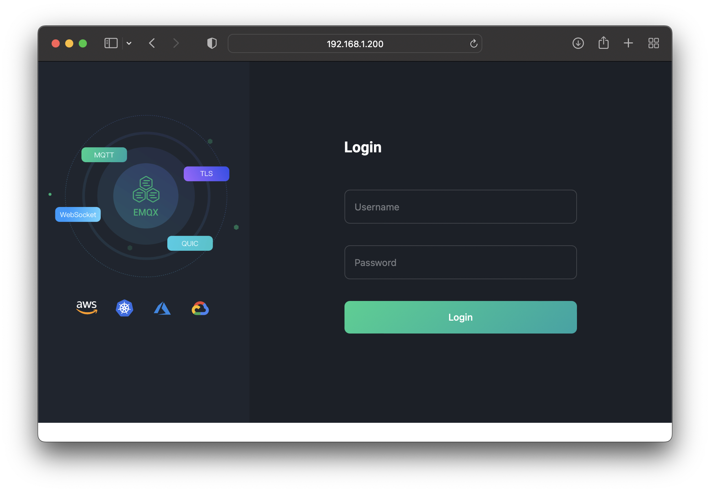
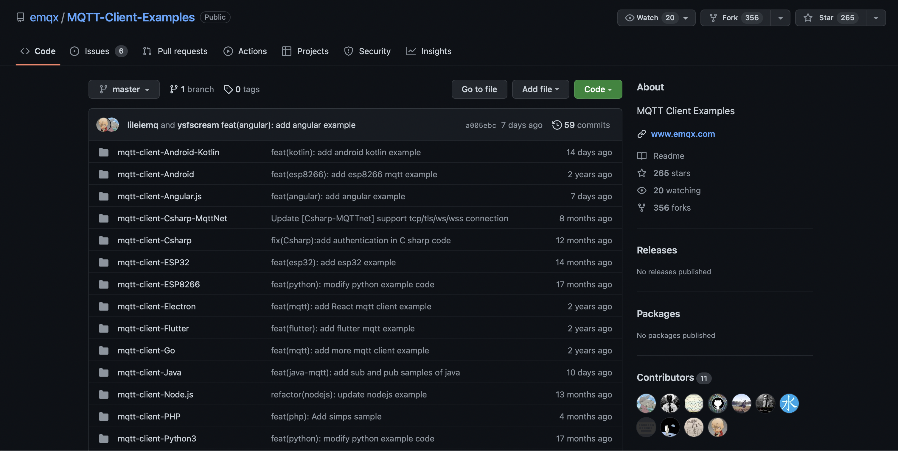

Get Started with Docker (www.docker.com/get-started/)
Get Started with Docker (www.docker.com/get-started/)Containerization involves encapsulating or packaging up software code and all its dependencies so that it can run uniformly and consistently on any infrastructure
Idea
Docker Concept
Docker Architure
A container is an abstraction at the application layer that packages code and dependencies together. Instead of virtualizing the entire physical machine, containers virtualize the host operating system only


Docker Desktop is an easy-to-install application for your Mac or Windows environment that enables you to build and share containerized applications and microservices.
It provides a simple interface that enables you to manage your containers, applications, and images directly from your machine without having to use the CLI to perform core actions.
Docker Desktop includes:
Get Started with Docker (www.docker.com/get-started/)
After you’ve successfully installed Docker Desktop, you can check the versions of these binaries by running the following commands:
$ docker compose version
Docker Compose version v2.7.0
$ docker --version
Docker version 20.10.17, build 100c701
$ docker version
Client:
Cloud integration: v1.0.28
Version: 20.10.17
API version: 1.41
Go version: go1.17.11
Git commit: 100c701
Built: Mon Jun 6 23:04:45 2022
OS/Arch: darwin/arm64
Context: default
Experimental: true
...
Docker Hub(https://hub.docker.com/) is a service provided by Docker for finding and sharing container images with your team. It is the world’s largest repository of container images with an array of content sources including container community developers, open source projects and independent software vendors (ISV) building and distributing their code in containers.

Node-RED
Low-code programming for event-driven applications
Node-RED(https://nodered.org) is a programming tool for wiring together hardware devices, APIs and online services in new and interesting ways.
It provides a browser-based editor that makes it easy to wire together flows using the wide range of nodes in the palette that can be deployed to its runtime in a single-click

Documentation on share environment e.g. nodered is the key to start.

Run docker Node-RED
To run Node-RED in Docker in its simplest form just run:
$ mkdir docker-nodered
$ cd docker-nodered
$ mkdir node_red_data
$ docker run -it -p 1880:1880 -v "$(pwd)/node_red_data:/data" --name nodered-mqtt nodered/node-red
4 Sep 15:10:03 - [info]
Welcome to Node-RED
===================
4 Sep 15:10:03 - [info] Node-RED version: v3.0.2
4 Sep 15:10:03 - [info] Node.js version: v16.16.0
4 Sep 15:10:03 - [info] Linux 5.10.104-linuxkit arm64 LE
4 Sep 15:10:03 - [info] Loading palette nodes
4 Sep 15:10:05 - [info] Dashboard version 3.1.7 started at /ui
4 Sep 15:10:05 - [info] Settings file : /data/settings.js
4 Sep 15:10:05 - [info] Context store : 'default' [module=memory]
4 Sep 15:10:05 - [info] User directory : /data
4 Sep 15:10:05 - [warn] Projects disabled : editorTheme.projects.enabled=false
4 Sep 15:10:05 - [info] Flows file : /data/flows.json
4 Sep 15:10:05 - [info] Server now running at http://127.0.0.1:1880/
4 Sep 15:10:05 - [warn]
---------------------------------------------------------------------
Your flow credentials file is encrypted using a system-generated key.
If the system-generated key is lost for any reason, your credentials
file will not be recoverable, you will have to delete it and re-enter
your credentials.
You should set your own key using the 'credentialSecret' option in
your settings file. Node-RED will then re-encrypt your credentials
file using your chosen key the next time you deploy a change.
---------------------------------------------------------------------
4 Sep 15:10:05 - [info] Starting flows
4 Sep 15:10:05 - [info] Started flows
4 Sep 15:10:35 - [info] [mqtt-broker:66b4ca9236e8f3eb] Connection failed to broker: mqtt://192.168.1.103:1883
Docker Desktop

Docker Containter
$ docker ps -a
CONTAINER ID IMAGE COMMAND CREATED STATUS PORTS NAMES
9b592f9233cb nodered/node-red:latest "./entrypoint.sh" 2 days ago Up 43 seconds (healthy) 0.0.0.0:1880->1880/tcp mynodered
Login to running Node-Red

Manager pallet on Node-RED

install Dashboard ui from flows

Docker Build is one of Docker Engine’s most used features. Whenever you are creating an image you are using Docker Build. Build is a key part of your software development life cycle allowing you to package and bundle your code and ship it anywhere
EMQX (https://www.emqx.io/docs/en/v5.0/) is an Open-source MQTT broker with a high-performance real-time message processing engine, powering event streaming for IoT devices at massive scale.
As the most scalable MQTT broker, EMQX can help you connect any device, at any scale. Move and process your IoT data anywhere.
$ git clone https://github.com/emqx/emqx.git
$ cd emqx
$ git checkout $(git describe --abbrev=0 --tags)
Dockerfile is the keys. Dockerfile (https://github.com/emqx/emqx/blob/master/deploy/docker/Dockerfile)
Dockerfile:
ARG BUILD_FROM=ghcr.io/emqx/emqx-builder/5.0-17:1.13.4-24.2.1-1-debian11
ARG RUN_FROM=debian:11-slim
FROM ${BUILD_FROM} AS builder
COPY . /emqx
ARG EMQX_NAME=emqx
ENV EMQX_RELUP=false
RUN export PROFILE=${EMQX_NAME%%-elixir} \
&& export EMQX_NAME1=$EMQX_NAME \
&& export EMQX_NAME=$PROFILE \
&& export EMQX_LIB_PATH="_build/$EMQX_NAME/lib" \
&& export EMQX_REL_PATH="/emqx/_build/$EMQX_NAME/rel/emqx" \
&& export EMQX_REL_FORM='docker' \
&& cd /emqx \
&& rm -rf $EMQX_LIB_PATH \
&& make $EMQX_NAME1 \
&& mkdir -p /emqx-rel \
&& mv $EMQX_REL_PATH /emqx-rel
FROM $RUN_FROM
# Elixir complains if runs without UTF-8
ENV LC_ALL=C.UTF-8
ENV LANG=C.UTF-8
COPY deploy/docker/docker-entrypoint.sh /usr/bin/
COPY --from=builder /emqx-rel/emqx /opt/emqx
RUN ln -s /opt/emqx/bin/* /usr/local/bin/
RUN apt-get update; \
apt-get install -y --no-install-recommends ca-certificates procps; \
rm -rf /var/lib/apt/lists/*
WORKDIR /opt/emqx
RUN groupadd -r -g 1000 emqx; \
useradd -r -m -u 1000 -g emqx emqx; \
chgrp -Rf emqx /opt/emqx; \
chmod -Rf g+w /opt/emqx; \
chown -Rf emqx /opt/emqx
USER emqx
VOLUME ["/opt/emqx/log", "/opt/emqx/data"]
# emqx will occupy these port:
# - 1883 port for MQTT
# - 8081 for mgmt API
# - 8083 for WebSocket/HTTP
# - 8084 for WSS/HTTPS
# - 8883 port for MQTT(SSL)
# - 11883 port for internal MQTT/TCP
# - 18083 for dashboard
# - 4370 default Erlang distribution port
# - 5369 for backplain gen_rpc
EXPOSE 1883 8081 8083 8084 8883 11883 18083 4370 5369
ENTRYPOINT ["/usr/bin/docker-entrypoint.sh"]
CMD ["/opt/emqx/bin/emqx", "foreground"]
Build image from source with Dockerfile
$ cd emqx
$ docker build -f deploy/docker/Dockerfile -t hanattaw/emqx . # change to your [yourname]/emqx
[+] Building 728.8s (16/16) FINISHED
=> [internal] load build definition from Dockerfile 0.0s
=> => transferring dockerfile: 37B 0.0s
=> [internal] load .dockerignore 0.0s
...
=> => naming to docker.io/hanattaw/emqx 0.0s
Use 'docker scan' to run Snyk tests against images to find vulnerabilities and learn how to fix them
Check build images exist
$ docker images
REPOSITORY TAG IMAGE ID CREATED SIZE
hanattaw/emqx latest 168a41fd5ed1 2 hours ago 494MB
Run Docker
$ mkdir docker-emqx # create folder
$ cd docker-emqx
$ mkdir emqx_log emqx_data # create log and data directories
$ docker run -d --name emqx517 -p 1883:1883 -p 8083:8083 -p 8084:8084 -p 8883:8883 -p 18083:18083 -v "$(pwd)/emqx_log:/opt/emqx/log" -v "$(pwd)/emqx_data:/opt/emqx/data" hanattaw/emqx:latest # from build image tag
bd823a28818343b59f83ea904eaf3df3991780724e61905f546520a57c114408
Process of running containter
$ docker ps -a
CONTAINER ID IMAGE COMMAND CREATED STATUS PORTS NAMES
f1080c969719 hanattaw/emqx:latest "/usr/bin/docker-ent…" 4 hours ago Up 9 seconds 4370/tcp, 5369/tcp, 0.0.0.0:1883->1883/tcp, :::1883->1883/tcp, 0.0.0.0:8083-8084->8083-8084/tcp, :::8083-8084->8083-8084/tcp, 8081/tcp, 0.0.0.0:8883->8883/tcp, :::8883->8883/tcp, 0.0.0.0:18083->18083/tcp, :::18083->18083/tcp, 11883/tcp emqx517
From your computer, open a browser and navigate to http://localhost:18083 or, if you’re using Play with Docker, click on Open Port.

stop container
$ docker stop emqx517
emqx517
start container
$ docker start emqx517
emqx517
rm stopped container
$ docker rm emqx517
emqx517
MQTTX is an elegant cross-platform MQTT 5.0 open source desktop client tool that supports running on macOS, Linux, and Windows.
MQTTX has many features. It provides a concise graphical interface with intuitive operational functionality. It supports MQTT/MQTT over WebSocket access with one-way/two-way SSL authentication, and supports Payload format conversion, simulation of test data with a custom scripts, automatic subscription of $SYS topic, viewing Traffic statistics, and more.
For download and use, please refer to the MQTT X website(https://mqttx.app/)

For MQTT client library example code, we try to cover as many mainstream programming languages and platforms as possible, see MQTT-Client-Examples .


For who are not complete building EMQX Broker from image. You can run EMQX docker by pulling from EMQX docker official image (https://hub.docker.com/_/emqx).
$ docker run -d --name emqx -p 1883:1883 -p 8083:8083 -p 8084:8084 -p 8883:8883 -p 18083:18083 emqx/emqx:latest
Or connect to Top Gun Rally CDTI 2022 MQTT (mqtt://172.21.16.10) with